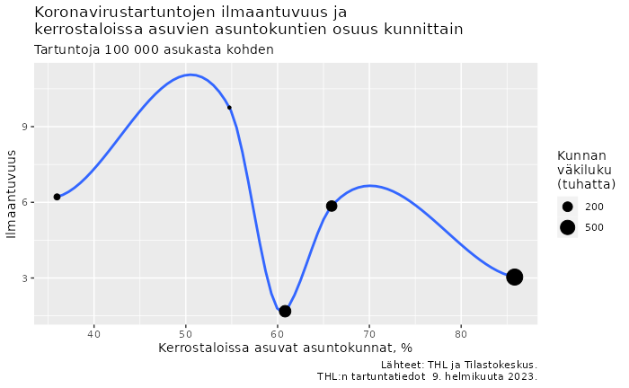

Covid and housing conditions in Finnish municipalities
laaja_kuutio <-
data("tidy/laaja_kuutio") %>%
filter(
Tiedot %in% c("Kerrostaloissa asuvat asuntokunnat, %", "Väkiluku"),
) %>%
group_by(`Alue 2021`, Tiedot) %>%
filter(time == max(time)) %>%
select(`Alue 2021`, Tiedot, value) %>%
pivot_wider(names_from = Tiedot)
inner_join(
data("tidy/thl_kunnat"),
laaja_kuutio,
by = c("Alue" = "Alue 2021")
) %>%
mutate(Ilmaantuvuus = 100*1000*value/Väkiluku) %>%
drop_na() %>%
ggplot(aes(`Kerrostaloissa asuvat asuntokunnat, %`, Ilmaantuvuus)) +
geom_smooth() +
geom_point(aes(size = Väkiluku/1000)) +
scale_size_continuous(breaks = c(10, 50, 200, 500)) +
labs(
title = paste0("Koronavirustartuntojen ilmaantuvuus ja\n",
"kerrostaloissa asuvien asuntokuntien osuus kunnittain"),
subtitle = "Tartuntoja 100 000 asukasta kohden",
size = "Kunnan\nväkiluku\n(tuhatta)",
caption = paste0(
"Lähteet: THL ja Tilastokeskus.\nTHL:n tartuntatiedot ",
format(data_vintage("epirapo/covid19case"), "%e. %Bta %Y.")
)
)
The history of births and deaths in Finland
data("StatFin/synt/statfin_synt_pxt_12dx.px", tidy_time = TRUE) %>%
filter(Tiedot %in% c("Elävänä syntyneet", "Kuolleet")) %>%
ggplot(aes(time, value/1000, color = Tiedot)) +
geom_line() +
labs(
title = "Elävänä syntyneet ja kuolleet Suomessa",
subtitle = "Tuhatta henkeä",
caption = "Lähde: Tilastokeskus.",
x=NULL, y=NULL
)
Economic sentiment in selected European countries
data("ec/esi_nace2§(Fin|Swe|Ger)§sentiment§2015-01-01") %>%
ggplot(aes(time, value, color = Country)) +
geom_line() +
labs(
title = "Economic Sentiment Indicator",
subtitle = "Composite index (average = 100)",
caption = "Source: European Commission.",
x=NULL, y=NULL
)
Exporting data to Excel
You can also export the data, for example to an Excel file:
data("ec/esi_nace2§(Fin|Swe|Ger)§§2015-01-01") %>%
pivot_wider(names_from = Country) %>%
split(.$Indicator) %>%
setNames(names(.) |> str_sub(1, 31)) |>
writexl::write_xlsx("../man/figures/export.xlsx")